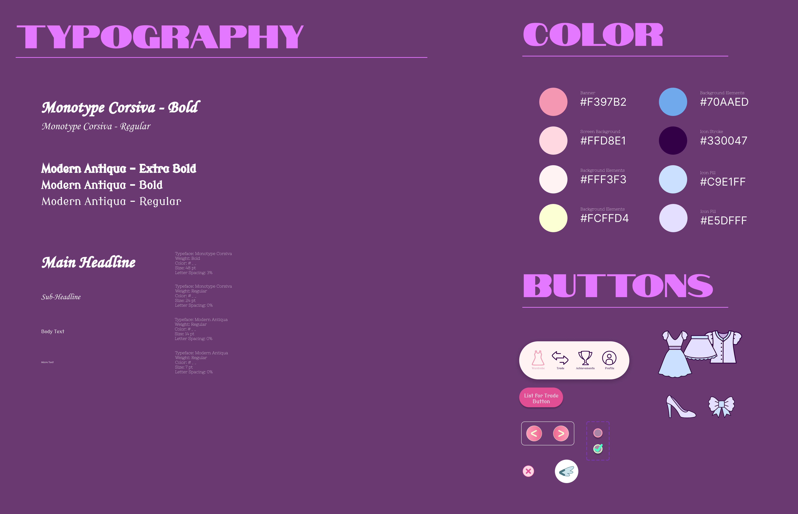
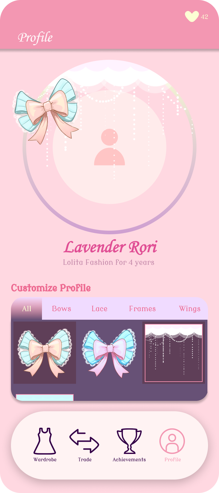
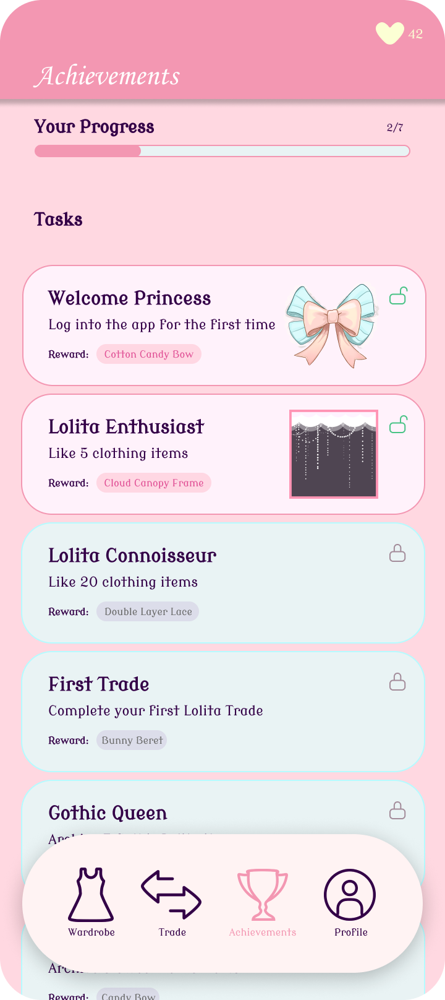
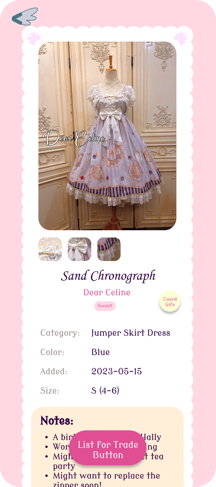
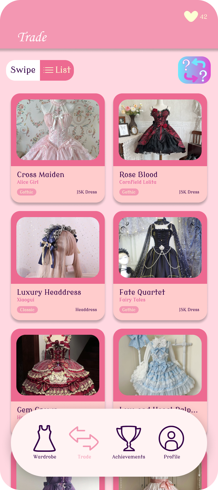

Pechii
A wardrobe archive and trading platform for the Lolita fashion community
Project Overview
Lolita fashion is a Japanese street style rooted in Victorian and Rococo aesthetics, with a passionate global community built around collecting and coordinating elaborate pieces. The name "Pechii" comes from the Japanese pronunciation of "petticoat" — a staple of the aesthetic.
I designed Pechii as a mobile app concept for Android that gives Lolita enthusiasts a dedicated space to catalog their wardrobe, plan outfits, and trade pieces with fellow community members. Unlike generic resale apps, Pechii was built specifically around how this community thinks about fashion — not just buying and selling, but curating and coordinating.

Problem Statement
Lolita fashion is expensive and deeply personal — pieces are often hand-selected over years, and no two wardrobes look alike. But despite how seriously collectors take their archives, most people were still managing them with spreadsheets, private social media posts, or just memory.
On the trading side, the community mostly relied on weekly swap meets and scattered Facebook groups. There was no dedicated, trustworthy platform — just informal arrangements with strangers online.
Research & Discovery
User Research
I explored online Lolita community forums, Reddit threads, and community cost analysis papers to understand how enthusiasts currently manage their wardrobes and what frustrated them most. A few patterns kept coming up:
What people were doing
- Tracking items in Google Sheets or Notion
- Posting "wardrobe dumps" on social media just to remember what they owned
- Using Facebook groups and Discord servers for trades
- Manually planning coordinates by saving screenshots
What they actually needed
- A visual, browsable wardrobe they could actually use
- Tools to plan and save coordinate combinations
- A trading space built around community trust
- Something that understands the culture.

Design Process
Early wireframes focused on the information architecture, i.e. how to make a large wardrobe feel browsable without becoming overwhelming. I iterated a lot on tagging and filtering logic before settling on the final layout, and explored several different approaches to the trading flow before landing on the swipe-based and card-based format.



Design & Prototype
Explore the full design system and interactive prototype below:
Key Features
1. Digital Wardrobe Archive
The core of the app. Users can photograph, tag, and catalog every piece in their collection, including purchase details, condition notes, and style tags. The goal was to make the wardrobe feel as tangible digitally as it does in person.
2. Coordinate Builder
Users can pull pieces from their archive and assemble outfits in a drag-and-drop interface. Saved coordinates can be revisited, edited, and shared. This allows coord/outfit planning to become something fun and visual and helps stray from the mental exercise many Lolitas struggle with when crafting their outfits.

3. Community Marketplace
Trading is a big part of the Lolita community, but trust is a real concern. I designed a moderated marketplace with user verification, ratings, and a mystery trade feature for those who enjoy the surprise element of community swaps.

4. Swipe or List View for Listings
I wanted the browsing experience to feel fun, not like doing chores. Users can swipe left and right through listings, or switch to a vertical list view if they prefer a more traditional browsing experience.



App Introduction Video
A walkthrough of the Pechii prototype:
Challenges & Solutions
Challenge 1
Inconsistent photo quality
Upon trying sample wardrobe photos, I realized that photos submitted by users may vary widely in quality, which makes the archive feel messy and hard to browse.
Next Step: In-app photo guides and framing templates to nudge users toward consistent, clean shots without being restrictive.
Challenge 2
Building trust in trades
The community may have anxiety around scams, especially for high-value brand pieces.
Next Step: Incorporate a tiered verification system, public trade ratings, and transaction history linked clearly and directly on user profiles so trust signals are visible before anyone commits to a trade.
Reflection & Learnings
This project was a good reminder that designing for a niche community means doing the cultural homework first. The Lolita fashion community has its own vocabulary, values, and etiquette, so getting that wrong (even subtly) would have made the app feel like it was designed by an outsider.
- Context before features: Understanding why people collected, not just what they collected, shaped every design decision.
- Aesthetic coherence matters: For a fashion-focused app, the visual design had to feel intentional. Thus, the UI was modeled as a virtual Lolita-themed wardrobe, i.e. belonging in the same world as the pieces it was archiving.
- Trust is a design problem: For the marketplace to work, the next improvement I have to make is creating safety clearly visible, via user badges, ratings, and verified profiles.
- Flexibility at scale: Some users own 10 pieces, some own 300. The system needed to feel manageable at both ends without being designed for just one.